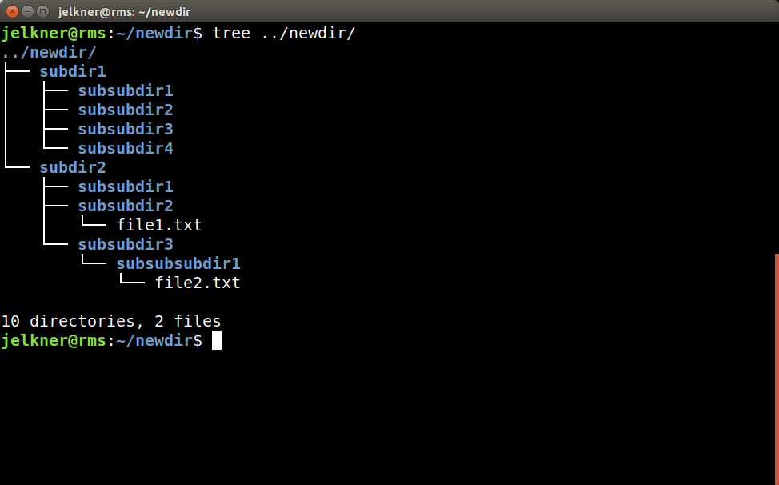

Type each of the following commands at the unix command prompt. Observe the result of each, and apply your new understanding of the file system to make sense of what you see.
$ mkdir newdir
$ mkdir newdir/subdir1
$ mkdir newdir/subdir1/subsubdir1
$ cd newdir
-
As in the previous exercise, try to anticipate what you will see before running this command. If you can't, reread the lesson and see if that can help you figure out what is going on.
$ ls
You should see only the
subdir1directory. $ mkdir subdir1/subsubdir2
$ mkdir subdir1/subsubdir3
$ mkdir subdir1/subsubdir4
$ mkdir subdir2
$ mkdir subdir2/subsubdir1 subdir2/subsubdir2 subdir2/subsubdir3
The
mkdircommand can take more than one argument, seperated by a space. Each argument is a new directory to create. Running this command will create three new directories.$ touch subdir2/subsubdir2/file1.txt
$ mkdir subdir2/subsubdir3/subsubsubdir1
$ touch subdir2/subsubdir3/subsubsubdir1/file2.txt
$ tree ../newdir
If you followed each step correctly, you will see this in your terminal:

Note the argument to the
treecommand,../newdir. Since thetreecommand was run from within the directory,newdir, we needed to first move to the parent ofnewdir,.., from wherenewdircan beseen
bytree.- To test your understanding, answer the following questions
before you run the command. If you can answer them correctly, you
can have confidence that you understand what we have learned so far.
- What would you see if you ran
$ lsfrom inside thenewdirdirectory? - What would you see if you ran
$ lsfrom inside thesubdir1directory? - What would you see if you ran
$ lsfrom inside thesubdir2directory? - What would you see if you ran
$ tree subdir2/subsubdir3from inside thenewdirdirectory?
- What would you see if you ran